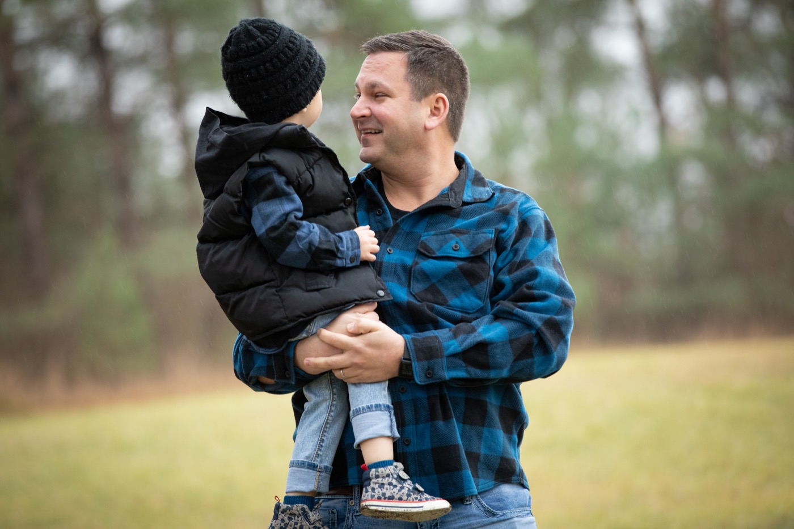
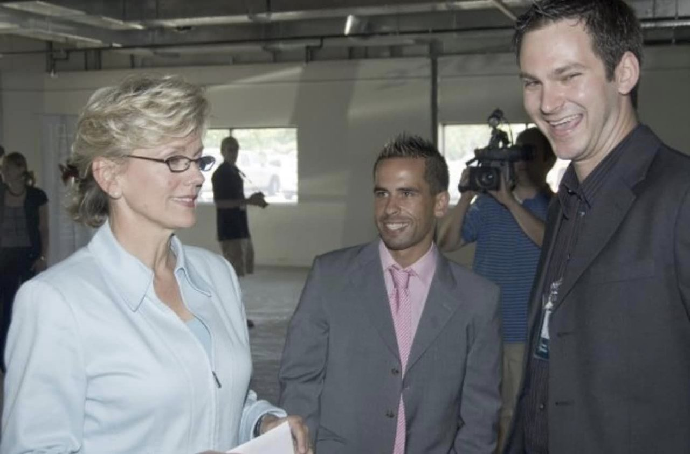

"Travis is a technology bloodhound. He sniffs out the next best thing and knows how to take advantage of it in products and services. If you're looking for a status quo guy, Travis is NOT your man. If you need someone to see a profitable future from a myriad of opportunities, rally the troops and make it happen? Yep, he's that good."
— Troy Stein, LinkedIn Recommendation

Travis Stoliker is a Michigan entrepreneur, community leader, and public servant based in Haslett, Michigan, where he lives on Lake Lansing with his wife Laken and son Lane. He is currently CEO of Scribe Media and serves as a Trustee on the Haslett Board of Education (term expires 2030).
Travis's career in technology began at TechSmith, where he helped grow Camtasia from the lowest-selling product to the company's top product. From 2009 to 2015, he served as VP of Marketing at Liquid Web, joining when the company had roughly 10 employees and helping grow it to 480+ employees, three data centers in Lansing, a data center in Amsterdam, and ~$80 million in annual recurring revenue before its landmark $224 million private equity sale in 2015. During that run, Liquid Web was named an Inc. 5000 Fastest-Growing U.S. Company 12 consecutive years — a rare distinction in American business.
In 2015, Travis co-invested in and helped build Saddleback BBQ with founder Matt Gillett. The restaurant earned Food Network recognition as one of the Best Sandwiches in America, was named Best BBQ in Michigan by Mental Floss Magazine, won the Greater Lansing Business of the Year award (2023), SBDC Small Business of the Year (2018), Michigan 50 Companies to Watch (2023), and the Hospitality Hero Award (2023). Saddleback expanded to four profitable locations with presences at Spartan Stadium and Breslin Center, developed a line of BBQ sauces and rubs in major retailers, paid off student lunch debt across nine school districts, and pioneered pay transparency among Lansing-area businesses.
Travis is also the creator of the Year of the Opposite — a personal transformation challenge that led him to lose 62 pounds, run 1,000 miles in a single year, complete a full marathon, cure his depression, and reverse his high blood pressure, high cholesterol, and elevated triglycerides. He now shares this methodology through his Substack newsletter and podcast.
His community service includes serving on the boards of Ele's Place (capital region grief center for children), East Lansing Info, Capital Community Angel Investors, East Lansing Zoning Board of Appeals, and GridPane. He received a personal letter of commendation from Congresswoman Elissa Slotkin and has corresponded publicly with Governor Jennifer Granholm on energy policy. In 2023, the Kiwanis Club of Haslett named him Citizen of the Year — recognizing community service he "had no idea" he was even being considered for. In 2024, Holt Public Schools named him an Outstanding Alumni.
Travis invented the Gyroaster, a roasting device, and has been a Facebook panelist on digital business strategy. He began his career at WILX TV in Lansing, where he was elected UAW Union Steward — one of the youngest in the department's history.
